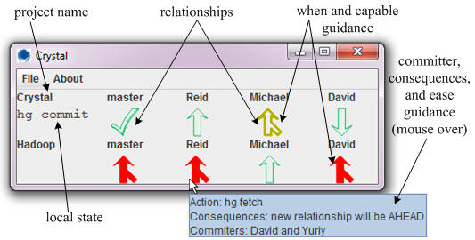

Crystal: Proactive Conflict Detector for Distributed Version Control Crystal: Proactive Conflict Detector for Distributed Version Control
Crystal: Proactive Conflict Detector for Distributed Version Control Crystal: Proactive Conflict Detector for Distributed Version ControlContents:
When two or more developers collaborate, it is possible for their independent changes to conflict — either syntactically as a version control conflict or behaviorally if the changes merge cleanly but have unintended interactions.
The Crystal tool informs each developer of the answer to the question, “Might my changes conflict with others' changes?”
Crystal monitors multiple developers' repositories. It informs each developer when it is safe to push her changes, when she has fallen behind and could pull changes from others or a central repository, and when changes other developers have made will cause a syntactic or behavioral conflict.
Crystal examines commits. It does not examine your working copy — your uncommitted modifications. The reason is that commits are more likely to be coherent and desired units of work, for which notification about (non-)conflicts is of value.
The Crystal client is available for download.
To run Crystal, either double click the crystal.jar file or execute from the command line:
java -jar crystal.jar
Crystal runs as an icon in your task bar. Click on the icon to see the full client and more options.
Crystal has the following requirements:
To install Crystal:
You can also download Crystal's source code from the Crystal Google code page.
If accessing the remote repositories in your configuration file prompts you for a password, then Crystal will forward that prompt to you. Crystal accesses these repositories frequently — by default, every 10 minutes for each repository.
Depending on how you access your repositories, there are ways to get around entering your password every time:
This is a screen shot of the main Crystal window.

Crystal displays four types of information: local state, relationship, possible action, and guidance.
The "local state", shown below the project name, describes the working copy. It shows a command that can be run on the working copy.
There are five possible relationships (plus two descriptors) between the developer's repository and that of a collaborate. This relationship determines the shape of the icon Crystal displays.
| Crystal shape | Meaning of the shape |
|---|---|
| SAME: The repositories are in sync. | |
| AHEAD: Your repository has newer commits than the other one. You may consider pushing your changes or letting the owner know. | |
| BEHIND: The other repository has newer commits than yours. You may consider pulling changes to avoid later merges. | |
| MERGE: Each of the two repositories has commits not present in the other one, but they can be merged cleanly. | |
| TEXTUAL_X: Each of the two repositories has commits not present in the other one, and merging them will result in a textual conflict. | |
| BUILD_X: Each of the two repositories has commits not present in the other one, they can be merged textually cleanly, but merging them results in code that fails to build. | |
| TEST_X: Each of the two repositories has commits not present in the other one, they can be merged textually cleanly, but merging them results in code that fails tests. | |
| Crystal is in the process of refreshing this data. | |
| Crystal experienced an error in computing this relationship. |
In the task bar, Crystal displays the most severe relationship icon that appears anywhere in the full window.
Holding the mouse over an icon displays a tool tip. At the top of the tool tip, Crystal shows the action the developer may perform, if one is available (e.g., hg commit, hg merge, hg fetch, and hg push).
There are five types of guidance Crystal displays:
The Crystal configuration file is an XML file that describes the locations of the scratch space, the hg executable, and the repositories Crystal monitors. On a Unix-like environment, it appears in ~/.conflictClient.xml. On a Windows environment, it appears in the user's home directory , e.g., %UserProfile%\.conflictClient.xml.
Here is an example valid configuration file:
<?xml version="1.0" encoding="UTF-8"?>
<ccConfig tempDirectory="/scratch/conflictClient/" refresh="60">
<!-- First project uses dropbox to share repositories -->
<project ShortName="MyFirstProject" Kind="HG" Clone="$HOME/Dropbox/projects/MyLocalFirstProjectRepo/" parent="MASTER">
<source ShortName="MASTER" Clone="$HOME/Dropbox/projects/MASTER/MyLocalFirstProjectRepo/" commonParent="MASTER" />
<source ShortName="Friend" Clone="$HOME/Dropbox/projects/Friend/MyLocalFirstProjectRepo" commonParent="MASTER" />
<source ShortName="Enemy" Clone="$HOME/Dropbox/projects/Enemy/MyLocalFirstProjectRepo" commonParent="MASTER" />
</project>
<!-- Second project does not use dropbox to share repositories -->
<project ShortName="MySecondProject" Kind="HG" Clone="$HOME/projects/MyLocalSecondProjectRepo/"
parent="MASTER" compile="make" test="make test">
<source ShortName="MASTER" Clone="ssh://user@host/path/to/second/project/repo/" commonParent="MASTER" />
<source ShortName="Friend" Clone="https://user@host/path/to/friend/second/repo" commonParent="MASTER" />
</project>
</ccConfig>
To be a valid XML file, it cannot have any whitespace before the <?xml ...?> element.
A configuration file consists of a single XML element: ccConfig.
This element has two attributes: tempDirectory and (optionally) refresh. These attributes specify the path to the scratch space and how often, in seconds, Crystal should attempt to refresh itself.
ccConfig has a project child for each project that
Crystal monitors.
The project XML element has 7 attributes; the first three are required and the last four are optional.
The project element has a source child for each remote repository that Crystal should compare to your repository.
The source element has four attributes. The first two are required and the last two are optional.
The more of your co-workers' repositories you have read access to, the more useful Crystal will be. This section explains how to make your repositories (your clones) available to a co-worker.
If you and your co-worker have access to the same file system, then you can use the "File system sharing" technique. If you have access to a machine that runs a web server, then you can use the "Http sharing" technique. You can always use the "Dropbox sharing" technique.
If you choose to make a copy of your repository in an accessible location, then the more frequently you update the copy, the more useful Crystal is. Here is a line you can place in your crontab file to automate the task:
# Update a public copy of a .hg directory every minute. * * * * * rsync -a .../path-to-repo/.hg .../accessible-path
The .hg file will end up as .../accessible-path/.hg, and the path to the repository is just .../accessible-path.
The rsync program even permits the destination path to be on a different computer, in which case it looks like machinename:filename, for example barb.cs.washington.edu:/homes/gws/mernst/www/crystal-repositories/...
Crystal maintains two log files to help with diagnosing unexpected problems. One is a plain text log that is easy to read (.conflictClientLog.log) and the other is an XML log that can be more easily analyzed programmatically (.conflictClientLog.xml). On a Unix-like environment, these appear in ~/. On a Windows environment, these appears in the user's home directory %UserProfile%\.
This work is supported by Microsoft Research through the Software Engineering Innovation Foundation grant, by the National Science Foundation under Grant# 0963757 and Grant #0937060 to the Computing Research Association for the CIFellows Project, by the National Science and Engineering Research Council Postdoctoral Fellowship, and by IBM through a John Backus Award.
Crystal is designed and developed by Yuriy Brun, Reid Holmes, Michael Ernst, and David Notkin.
Email us with any questions.